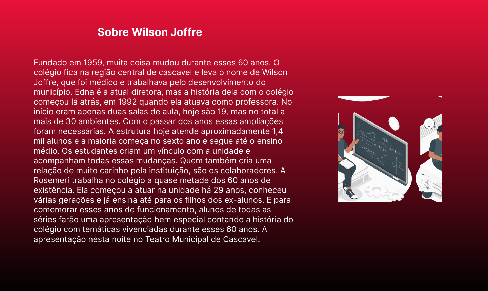

- 2° ano D
- Escola Estadual Wilson Joffre
- Natan Tiepo Somenssi
Fundado em 1959, muita coisa mudou durante esses 60 anos. O colégio fica na região central de cascavel e leva o nome de Wilson Joffre, que foi médico e trabalhava pelo desenvolvimento do município. Edna é a atual diretora, mas a história dela com o colégio começou lá atrás, em 1992 quando ela atuava como professora. No início eram apenas duas salas de aula, hoje são 19, mas no total a mais de 30 ambientes. Com o passar dos anos essas ampliações foram necessárias. A estrutura hoje atende aproximadamente 1,4 mil alunos e a maioria começa no sexto ano e segue até o ensino médio. Os estudantes criam um vínculo com a unidade e acompanham todas essas mudanças. Quem também cria uma relação de muito carinho pela instituição, são os colaboradores. A Rosemeri trabalha no colégio a quase metade dos 60 anos de existência. Ela começou a atuar na unidade há 29 anos, conheceu várias gerações e já ensina até para os filhos dos ex-alunos. E para comemorar esses anos de funcionamento, alunos de todas as séries farão uma apresentação bem especial contando a história do colégio com temáticas vivenciadas durante esses 60 anos. A apresentação nesta noite no Teatro Municipal de Cascavel.
